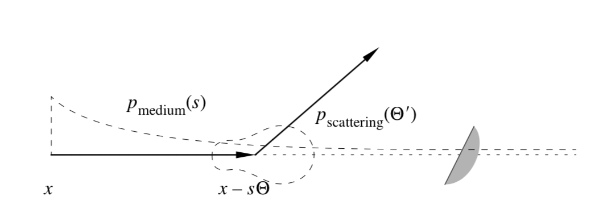
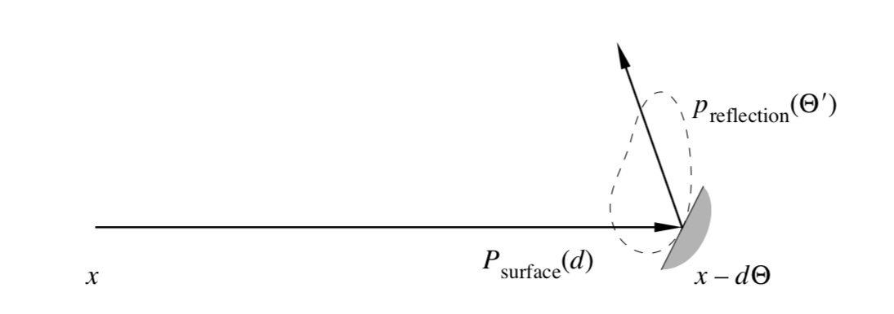

|
Our project implemented Volumetric Path Tracing. Volumetric Path Tracing is a technique that can show the effect of interaction between light and different medias. Previously, in project 3, we implemented a path tracer which only support lights falling on explicit surface. We extended the path tracer in project 3 so that the light not only interacts with primitives' surface, but also with the media in the air.
|

|

|
Based on the skeleton of project, we implement the light interacting with the media by Random Walk. In this part, we modify the estimate_global_illumination and at_least_one_bounce function to support our implementions. First, before the light first interacts with a surface, we randomly sample a distance, \(s\), using the PDF
Then, we compare \(s\) with the distance between camera and the first hit point of the ray \(d\). If \(s < d\), we perform a integration based on this equation:
where \(\delta\) is the scattering coefficient between 0 and 1, describing how much percent of light are being scattered and \(k\) is the extinction coefficient between 0 and 1, describing how much percent of light are fell out during one interacting with the media. Additionally, \(f(y, \Theta, \Theta')\) is the phase function, which is similar to the BSDF in normal path tracing, describing the distribution of the bouncing light. This will be discussed later. If \(s \ge d\), we perform a normal path tracing. Notice that for global illumination, this step only affects the first bounce, all other bounces are normal path tracing. In sum, our approach can be concluded by this equation
Notice that whether we take the normal path tracing or not, we always times the \(ke^{-ks}\) term, and also because the probability of whether we interact with the media or not are determined by this equation \(ke^{-ks}\), when we do monte carlo integration, these two terms cancel with each other.
Sampling from the light is similar but different for interacting with the media in the air. Based on the original function estimate_direct_lighting_importance, we modify it so that it support interacting with the media. Instead of the normal importance over light, which times the BSDF of the surface, a cosine term and divided by the pdf, the volumetric version times the irradiance with Phase function, scattering coefficient and divided by the extinction coefficient and pdf. We also times a filter Spectrum to implement fogs of different color.
|
|
Phase function is important in volumetric path tracing. We use phase function to sample the bouncing ray in global illumination. Naïvely, the simplest phase function is a uniform sphere sampling, where
We also implement the Henyey-Greenstein phase function, which is
where \(G\) is a constant between -1 and 1. If \(G = 0\), obviously it's a uniform sphere phase function. If \(G < 0\), higher probability that bouncing ray will towards the opposite direction of camera, and if \(G > 0\), higher probability that bouncing ray will towards the camera.
During our implementation of estimation of the radiance of particles in a media with direct illumination & importance sampling, we encountered a couple of difficulties. Because we modelled our implementation based on the importance sampling at surface hitpoints in project 3-1, the first problem that we encountered was removing the lambertian cosine term when estimating irradiance. We forgot that the atmosphere does not use the cosine term to evaluate falloff; instead, we need to multiply by a coefficient (scattering coefficient / extinction coefficient) to account for "fall off" due to out-scattering. Another issue that we encountered was re-writing raytrace_pixel() to weight each sample by its probability distribution based on the exponential decay of ray marching. Originally in proj3, this was not considered because every ray hits the same surface hitpoint with 100% probability. For volumetric rendering, however, we need to bias each sample because different camera rays from the same pixel land on different positions in the scene based on the medium. After realizing this, we modified our code to make sure the overall estimation is unbiased.
When implementing global illumination of particles, we encountered similar inaccuracies resulting from using the wrong scaling factor for our Monte Carlo estimator. We also had to fix our random walk sampling to ensure its probability distribution is physically accurate. We realized that a phase function sampler is also needed for both isotropic and non-isotropic phase functions.
When implementing the sample_L function and constructor for the spot light, we had to closely examine the original code framework to understand the parameters passed in and make use of them correctly. We spent considerable time on debugging the calculation of angles within sample_L to ensure the spotlight illuminates a cone-shaped area. Also, in order to view the mesh structure of the dae files we created in the pathtracer, we added a patch to collada.cpp

|

|

|

|

|

|
Above are some scenes rendered. We can see that with participation of media, the whole scene gets blurred and the contour of objects is less clear. We can also see two clear light beams in the air with participation of media under spot light.

|

|

|
As extinction coefficient increases, the scene becomes darker due to increasing thickness of the fog. As scattering coefficient increases, the scene gets brighter because the media out-scatters light more frequently. As the Henyey-Greenstein parameter G changes from positive to negative, the light is scattered from forward to backward.
Here is a link to our final video.
For further implementation, we can
All team members actively attended meetings to decide the project topic, understand technical approaches in papers, discuss the implementation, and debugging the code.
Jiayue wrote most of the codes for importance direct lighting with media, and spot light sampling. She also created new dae files with Blender for rendering; made videos for milestone and final report; made slides for presentation; wrote part of write-up for milestone and final report; and rendered scenes for final results.
Jiehan wrote codes for global illumination with media, uniform sphere phase function, and HG phase function. He also made slides for presentation; wrote part of write-up for milestone and final report; and rendered scenes for final results.
Yun created new dae files with Blender for rendering, wrote part of write-up for milestone and final report, made slides for presentation, and rendered scenes for final results.